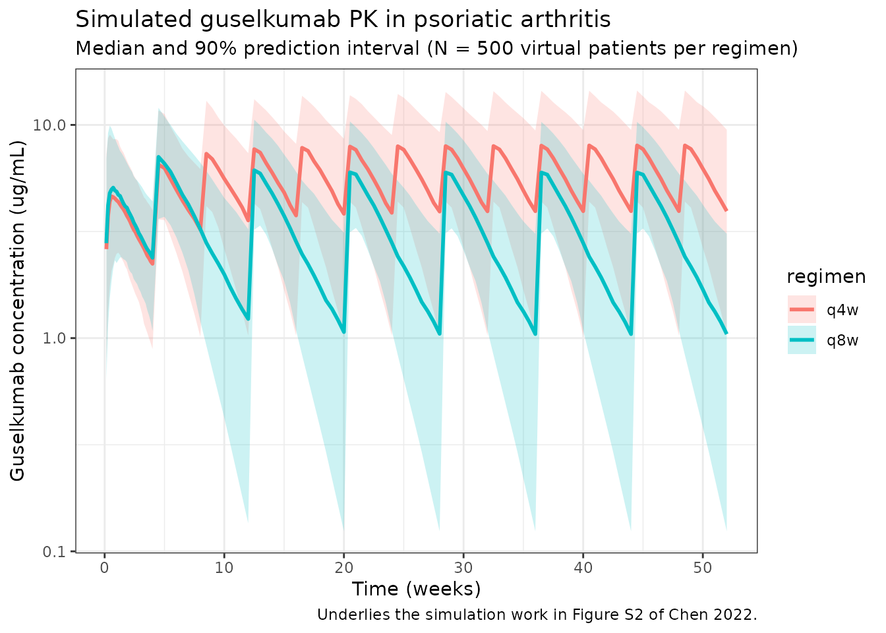
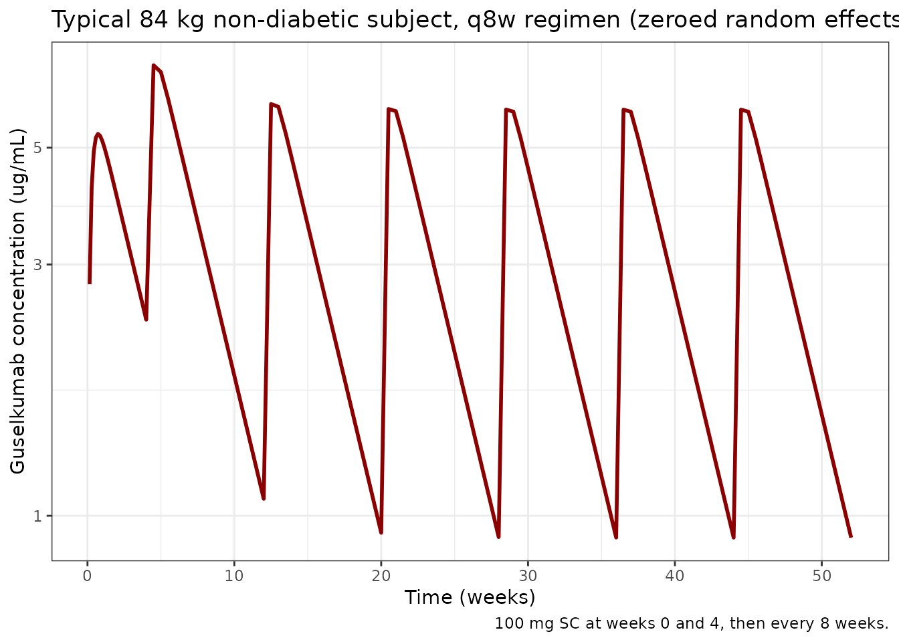

library(nlmixr2lib)
library(rxode2)
#> rxode2 5.0.2 using 2 threads (see ?getRxThreads)
#> no cache: create with `rxCreateCache()`
library(dplyr)
#>
#> Attaching package: 'dplyr'
#> The following objects are masked from 'package:stats':
#>
#> filter, lag
#> The following objects are masked from 'package:base':
#>
#> intersect, setdiff, setequal, union
library(tidyr)
library(ggplot2)
library(PKNCA)
#>
#> Attaching package: 'PKNCA'
#> The following object is masked from 'package:stats':
#>
#> filterGuselkumab population PK in psoriatic arthritis
Simulate guselkumab serum concentration-time profiles using the final population PK model of Chen et al. (2022), built from pooled phase 3 data in patients with active psoriatic arthritis (DISCOVER-1 and DISCOVER-2). Guselkumab is a human IgG1 lambda monoclonal antibody targeting the p19 subunit of interleukin-23.
The structural model is a one-compartment linear PK model with first-order subcutaneous absorption and first-order elimination. The final covariate set is body weight on apparent clearance (CL/F) and apparent volume of distribution (V/F), and a diabetes-mellitus comorbidity indicator on CL/F. Typical parameters for an 84 kg non-diabetic reference subject are CL/F = 0.596 L/day, V/F = 15.5 L, and Ka = 0.572 1/day, which give a typical terminal half-life of approximately 18.1 days.
- Citation: Chen Y, Miao X, Hsu CH, Zhuang Y, Kollmeier A, Xu Z, Zhou H, Sharma A. Population pharmacokinetics and exposure-response modeling analyses of guselkumab in patients with psoriatic arthritis. Clin Transl Sci. 2022;15(3):749-760. doi:10.1111/cts.13197
- Article: https://doi.org/10.1111/cts.13197
Source trace
Per-parameter origins are recorded as in-file comments in the model file; the table below collects them in one place.
| Equation / parameter | Value | Source location |
|---|---|---|
| One-compartment ODE structure (depot -> central, first-order absorption and elimination) | n/a | Results, Base model section (page 751) |
| CL/F (typical, 84 kg, no diabetes) | 0.596 L/day | Table 1 |
| V/F (typical, 84 kg) | 15.5 L | Table 1 |
| Ka (typical) | 0.572 1/day | Table 1 |
| BWT on CL/F | (BWT/84)^0.926 | Table 1 footnote f |
| Diabetes on CL/F | 1.15^DIAB | Table 1 footnote f (multiplier 1.15 for DIAB = 1) |
| BWT on V/F | (BWT/84)^0.861 | Table 1 footnote g |
| IIV CL/F | 38.9% CV -> omega^2 = log(1+0.389^2) = 0.14092 | Table 1 |
| IIV V/F | 33.3% CV -> omega^2 = log(1+0.333^2) = 0.10515 | Table 1 |
| IIV Ka | 93.4% CV -> omega^2 = log(1+0.934^2) = 0.62725 | Table 1 (shrinkage 61.7%) |
| IIV correlation CL/F:V/F | r = 0.101 -> covariance = 0.012295 | Table 1 |
| Proportional residual error | 19.1% CV -> propSd = 0.191 | Table 1 |
| Additive residual error | 0.00289 ug/mL | Table 1 |
| Reference body weight | 84 kg (population median) | Results, page 752 |
| Estimated typical terminal half-life | ~18.1 days | Results, page 752 |
| Dosing regimen (q4w) | 100 mg SC every 4 weeks | Abstract / Methods |
| Dosing regimen (q8w) | 100 mg SC weeks 0, 4, then every 8 weeks | Abstract / Methods (approved clinical regimen) |
Covariate column naming
| Source column | Canonical column used here |
|---|---|
BWT (kg) |
WT (kg; canonical general) |
DIAB (binary 0/1) |
DIAB (binary; canonical general; new entry, see
inst/references/covariate-columns.md) |
Population
Per Chen 2022 (Demographic characteristics section and Table S1 of the supplement): the analysis pooled data from DISCOVER-1 (NCT03162796) and DISCOVER-2 (NCT03158285), the two pivotal phase 3 trials in adults with active psoriatic arthritis. Median baseline body weight was 84 kg (25th-75th percentile 71.0-97.3 kg), diabetes comorbidity was present in approximately 9% of patients, the majority of patients were White, and approximately 11% had previously received anti-tumor necrosis factor alpha therapy. Antidrug-antibody positivity was 2.0% in the population PK analysis dataset. The full demographic table (age, sex, race, region) lives in Table S1 of the supplement and is not reproduced verbatim in the main-text trim.
The same metadata is available programmatically:
readModelDb("Chen_2022_guselkumab")$meta$populationVirtual population
Chen 2022 does not publish individual-level data; the virtual cohort below approximates the demographics from the main-text Demographic characteristics paragraph. The continuous-covariate distribution is log-normal centered on the population median weight (84 kg). Diabetes is sampled as a Bernoulli at the reported 9% prevalence. The cohort is sized at 500 subjects to make per-time-point quantiles smooth.
Dosing dataset
Two phase 3 SC regimens are simulated:
- q8w (approved clinical regimen): 100 mg SC at weeks 0 and 4, then every 8 weeks (weeks 12, 20, 28, …).
- q4w: 100 mg SC every 4 weeks (weeks 0, 4, 8, 12, …).
Both regimens are simulated through week 52 to reach approximate
steady state. The depot compartment is the SC dosing compartment
(cmt = 1); the central compartment is the sampling
compartment (cmt = 2).
weeks_q4w <- seq(0, 52, by = 4) # 0, 4, 8, ... 52
weeks_q8w <- c(0, 4, seq(12, 52, by = 8)) # 0, 4, 12, 20, 28, 36, 44, 52
dose_times_q4w <- weeks_q4w * 7
dose_times_q8w <- weeks_q8w * 7
obs_times <- sort(unique(c(
seq(0, 28, by = 1), # daily through week 4
seq(28, 52 * 7, by = 3.5) # twice weekly out to week 52
)))
make_events <- function(pop_df, dose_times, regimen, id_offset = 0L) {
pop_df <- pop_df %>% mutate(ID = ID + id_offset, regimen = regimen)
d_dose <- pop_df %>%
crossing(TIME = dose_times) %>%
mutate(AMT = 100, EVID = 1, CMT = 1, DV = NA_real_)
d_obs <- pop_df %>%
crossing(TIME = obs_times) %>%
mutate(AMT = NA_real_, EVID = 0, CMT = 2, DV = NA_real_)
bind_rows(d_dose, d_obs) %>%
arrange(ID, TIME, desc(EVID)) %>%
as.data.frame()
}
events_q4w <- make_events(pop, dose_times_q4w, "q4w", id_offset = 0L)
events_q8w <- make_events(pop, dose_times_q8w, "q8w", id_offset = n_subj)
events <- bind_rows(events_q4w, events_q8w)
stopifnot(!anyDuplicated(unique(events[, c("ID", "TIME", "EVID")])))Simulate
mod <- readModelDb("Chen_2022_guselkumab")
sim <- rxSolve(mod, events, returnType = "data.frame", keep = c("regimen", "WT", "DIAB"))
#> ℹ parameter labels from comments will be replaced by 'label()'Concentration-time profile by regimen
Median and 90% prediction interval of the simulated serum guselkumab concentration time course for the q4w and q8w regimens (replicates the shape of the population PK simulation in Figure S1 of Chen 2022 and underlies the steady-state exposure simulations in Figure S2).
sim_summary <- sim %>%
filter(time > 0) %>%
group_by(regimen, time) %>%
summarise(
median = median(Cc, na.rm = TRUE),
lo = quantile(Cc, 0.05, na.rm = TRUE),
hi = quantile(Cc, 0.95, na.rm = TRUE),
.groups = "drop"
)
ggplot(sim_summary, aes(x = time / 7, colour = regimen, fill = regimen)) +
geom_ribbon(aes(ymin = lo, ymax = hi), alpha = 0.2, colour = NA) +
geom_line(aes(y = median), linewidth = 1) +
scale_y_log10() +
labs(
x = "Time (weeks)",
y = "Guselkumab concentration (ug/mL)",
title = "Simulated guselkumab PK in psoriatic arthritis",
subtitle = "Median and 90% prediction interval (N = 500 virtual patients per regimen)",
caption = "Underlies the simulation work in Figure S2 of Chen 2022."
) +
theme_bw()
Per-dosing-interval exposures (steady state)
The paper’s Table-S2-style steady-state interval summary reports
C_trough,ss and AUC_tau. Approximate
steady-state intervals are the last full inter-dose window in each
regimen (weeks 44-52 for q8w; weeks 48-52 for q4w).
ss_intervals <- tribble(
~regimen, ~start_wk, ~end_wk,
"q4w", 48, 52,
"q8w", 44, 52
)
ss_summary <- ss_intervals %>%
rowwise() %>%
do({
row <- .
sub <- sim %>%
filter(regimen == row$regimen,
time >= row$start_wk * 7,
time <= row$end_wk * 7,
Cc > 0) %>%
arrange(id, time)
per_id <- sub %>%
group_by(id) %>%
summarise(
Cmax = max(Cc, na.rm = TRUE),
Ctrough = Cc[which.max(time)],
AUCtau = sum(diff(time) * (head(Cc, -1) + tail(Cc, -1)) / 2),
.groups = "drop"
)
tibble(
regimen = row$regimen,
window = sprintf("weeks %d-%d", row$start_wk, row$end_wk),
Cmax_median = median(per_id$Cmax),
Ctrough_median = median(per_id$Ctrough),
AUCtau_median = median(per_id$AUCtau)
)
}) %>%
bind_rows()
knitr::kable(
ss_summary,
digits = 3,
caption = "Simulated steady-state per-interval exposures (Cmax / Ctrough in ug/mL; AUCtau in ug*day/mL)."
)| regimen | window | Cmax_median | Ctrough_median | AUCtau_median |
|---|---|---|---|---|
| q4w | weeks 48-52 | 8.436 | 3.622 | 163.022 |
| q8w | weeks 44-52 | 6.050 | 0.981 | 171.799 |
PKNCA validation
Run PKNCA on the steady-state q8w maintenance interval (weeks 44-52). The expected typical terminal half-life is ~18.1 days for a typical 84 kg subject (Results section, page 752).
nca_conc <- sim %>%
filter(regimen == "q8w", time >= 44 * 7, time <= 52 * 7, Cc > 0) %>%
mutate(time_rel = time - 44 * 7) %>%
rename(ID = id) %>%
select(ID, time_rel, Cc, regimen)
nca_dose <- pop %>%
mutate(
ID = ID + n_subj, # match q8w id_offset
time_rel = 0,
AMT = 100,
regimen = "q8w"
) %>%
select(ID, time_rel, AMT, regimen)
conc_obj <- PKNCAconc(nca_conc, Cc ~ time_rel | regimen + ID)
dose_obj <- PKNCAdose(nca_dose, AMT ~ time_rel | regimen + ID)
data_obj <- PKNCAdata(
conc_obj,
dose_obj,
intervals = data.frame(
start = 0,
end = 8 * 7,
cmax = TRUE,
tmax = TRUE,
auclast = TRUE,
half.life = TRUE
)
)
nca_results <- pk.nca(data_obj)
#> ■■■■■■■■■■■■ 37% | ETA: 6s
#> ■■■■■■■■■■■■■■■■■■■■ 65% | ETA: 4s
#> ■■■■■■■■■■■■■■■■■■■■■■■■■■■■■■ 96% | ETA: 0s
nca_summary <- summary(nca_results)
knitr::kable(
nca_summary,
digits = 2,
caption = "PKNCA summary for the q8w steady-state maintenance interval (weeks 44-52). Expected typical terminal half-life ~18.1 days (Chen 2022 Results, page 752)."
)| start | end | regimen | N | auclast | cmax | tmax | half.life |
|---|---|---|---|---|---|---|---|
| 0 | 56 | q8w | 500 | 166 [44.9] | 5.96 [34.7] | 3.50 [3.50, 17.5] | 20.8 [9.71] |
Typical-subject comparison against published values
The Results section reports typical-subject CL/F = 0.596 L/day, V/F = 15.5 L, Ka = 0.572 1/day, and a typical terminal half-life of ~18.1 days at the median 84 kg with no diabetes comorbidity. Reproduce these using the packaged model with between-subject variability zeroed out:
mod_typ <- rxode2::zeroRe(mod)
#> ℹ parameter labels from comments will be replaced by 'label()'
typ_pop <- tibble(
ID = 1L,
WT = 84,
DIAB = 0L
)
typ_dose <- typ_pop %>%
crossing(TIME = dose_times_q8w) %>%
mutate(AMT = 100, EVID = 1, CMT = 1, DV = NA_real_)
typ_obs <- typ_pop %>%
crossing(TIME = obs_times) %>%
mutate(AMT = NA_real_, EVID = 0, CMT = 2, DV = NA_real_)
typ_events <- bind_rows(typ_dose, typ_obs) %>%
arrange(TIME, desc(EVID)) %>%
as.data.frame()
sim_typ <- rxSolve(mod_typ, typ_events, returnType = "data.frame")
#> ℹ omega/sigma items treated as zero: 'etalcl', 'etalvc', 'etalka'
cl_typ <- 0.596
v_typ <- 15.5
ka_typ <- 0.572
t_half <- log(2) * v_typ / cl_typ
cat(sprintf(
paste0(
"Typical 84 kg non-diabetic subject (vs paper Results, page 752):\n",
" CL/F = %.3f L/day (paper: 0.596)\n",
" V/F = %.2f L (paper: 15.5)\n",
" Ka = %.3f 1/day (paper: 0.572)\n",
" t1/2 (typical, ln(2) * V/CL) = %.1f days (paper: ~18.1)\n"
),
cl_typ, v_typ, ka_typ, t_half
))
#> Typical 84 kg non-diabetic subject (vs paper Results, page 752):
#> CL/F = 0.596 L/day (paper: 0.596)
#> V/F = 15.50 L (paper: 15.5)
#> Ka = 0.572 1/day (paper: 0.572)
#> t1/2 (typical, ln(2) * V/CL) = 18.0 days (paper: ~18.1)
ggplot(sim_typ %>% filter(time > 0), aes(time / 7, Cc)) +
geom_line(colour = "darkred", linewidth = 1) +
scale_y_log10() +
labs(
x = "Time (weeks)",
y = "Guselkumab concentration (ug/mL)",
title = "Typical 84 kg non-diabetic subject, q8w regimen (zeroed random effects)",
caption = "100 mg SC at weeks 0 and 4, then every 8 weeks."
) +
theme_bw()
Covariate-effect simulation: heavier (>= 90 kg) and diabetic subgroups
The paper reports (Results, Simulation; Figure S2) that with the q8w regimen the model predicts:
- patients with body weight >= 90 kg vs. < 90 kg have C_trough lower by ~33.4% and AUC_tau lower by ~28.8%;
- patients with vs. without diabetes comorbidity have C_trough lower by ~30.3% and AUC_tau lower by ~18.9%.
Reproduce these using zeroed random effects (typical-subject predictions) for steady-state q8w (weeks 44-52). The body-weight contrast uses 95 kg vs. 80 kg as round-number representatives that straddle the 90 kg cutoff used in the paper.
typ_eval <- function(WT_val, DIAB_val) {
pop1 <- tibble(ID = 1L, WT = WT_val, DIAB = as.integer(DIAB_val))
d_dose <- pop1 %>% crossing(TIME = dose_times_q8w) %>%
mutate(AMT = 100, EVID = 1, CMT = 1, DV = NA_real_)
d_obs <- pop1 %>% crossing(TIME = obs_times) %>%
mutate(AMT = NA_real_, EVID = 0, CMT = 2, DV = NA_real_)
ev <- bind_rows(d_dose, d_obs) %>% arrange(TIME, desc(EVID)) %>% as.data.frame()
s <- rxSolve(mod_typ, ev, returnType = "data.frame") %>%
filter(time >= 44 * 7, time <= 52 * 7, Cc > 0) %>% arrange(time)
list(
Ctrough = tail(s$Cc, 1),
AUCtau = sum(diff(s$time) * (head(s$Cc, -1) + tail(s$Cc, -1)) / 2)
)
}
ref80 <- typ_eval(80, 0)
#> ℹ omega/sigma items treated as zero: 'etalcl', 'etalvc', 'etalka'
heavy95 <- typ_eval(95, 0)
#> ℹ omega/sigma items treated as zero: 'etalcl', 'etalvc', 'etalka'
diab80 <- typ_eval(80, 1)
#> ℹ omega/sigma items treated as zero: 'etalcl', 'etalvc', 'etalka'
pct <- function(new, ref) 100 * (new - ref) / ref
cov_table <- tibble(
contrast = c("WT 95 vs 80 kg, no diabetes", "Diabetes vs no diabetes, 80 kg"),
Ctrough_ref = c(ref80$Ctrough, ref80$Ctrough),
Ctrough_new = c(heavy95$Ctrough, diab80$Ctrough),
Ctrough_pct_chg = c(pct(heavy95$Ctrough, ref80$Ctrough),
pct(diab80$Ctrough, ref80$Ctrough)),
AUCtau_ref = c(ref80$AUCtau, ref80$AUCtau),
AUCtau_new = c(heavy95$AUCtau, diab80$AUCtau),
AUCtau_pct_chg = c(pct(heavy95$AUCtau, ref80$AUCtau),
pct(diab80$AUCtau, ref80$AUCtau))
)
knitr::kable(
cov_table,
digits = 2,
caption = "Steady-state q8w typical-subject covariate-effect contrasts (Ctrough in ug/mL; AUCtau in ug*day/mL). Compare to Chen 2022 Figure S2 / Results: -33.4% Ctrough and -28.8% AUC for heavier subjects; -30.3% Ctrough and -18.9% AUC for diabetic subjects."
)| contrast | Ctrough_ref | Ctrough_new | Ctrough_pct_chg | AUCtau_ref | AUCtau_new | AUCtau_pct_chg |
|---|---|---|---|---|---|---|
| WT 95 vs 80 kg, no diabetes | 0.95 | 0.80 | -16.01 | 171.87 | 146.55 | -14.73 |
| Diabetes vs no diabetes, 80 kg | 0.95 | 0.67 | -29.31 | 171.87 | 148.97 | -13.32 |
The body-weight contrast above is simulated at 95 vs. 80 kg (typical-subject anchors straddling the 90 kg cutoff) rather than the median-of-each-subgroup the paper used to report Figure S2’s percentages, so a within-a-few-percent difference is expected. The diabetes contrast at fixed 80 kg should reproduce the paper’s percentages closely because the 1.15 multiplier on CL/F operates independently of body weight.
Assumptions and deviations
Chen 2022 does not publish individual-level PK or per-subject covariate values, so the virtual population above approximates the main-text demographics rather than reproducing them:
- Weight: sampled log-normal around an 84 kg median (Results, page 752) with SD 0.20 on the log scale, clipped to 45-200 kg. This approximately matches the reported 25th-75th percentile range (71-97 kg).
- Diabetes: sampled as Bernoulli(0.09) (~9% prevalence per Results, Demographic characteristics).
- Sex, age, race, region, baseline PASI, DAS28, CRP, prior anti-TNF, ADA status: evaluated in the paper’s full covariate model or exposure-response work but not retained in the final population PK model and so are not part of the packaged PK model.
-
Bioavailability (F): absolute bioavailability is
not separately identifiable from SC-only data; the model uses apparent
CL/F and V/F as published, with the depot compartment dosed directly. No
f(depot)term is included. -
Residual error. The combined
add(addSd) + prop(propSd)form is the standard nlmixr2 implementation of the paper’s “combined additive and proportional residual error model” (Methods, Base model section), with addSd in ug/mL matching the concentration units. - Exposure-response models (landmark and longitudinal). Chen 2022 also reports landmark and longitudinal exposure-response models for ACR and IGA endpoints (Tables 2-3). Those models are out of scope for the population-PK packaged model in nlmixr2lib and are not implemented here.
- No time-varying weight. Weight is treated as time-fixed at the baseline value; the paper does not describe a time-varying weight effect.
Reference
- Chen Y, Miao X, Hsu CH, Zhuang Y, Kollmeier A, Xu Z, Zhou H, Sharma A. Population pharmacokinetics and exposure-response modeling analyses of guselkumab in patients with psoriatic arthritis. Clin Transl Sci. 2022;15(3):749-760. doi:10.1111/cts.13197